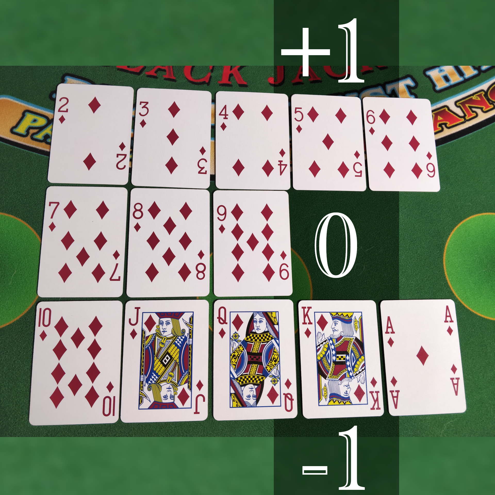
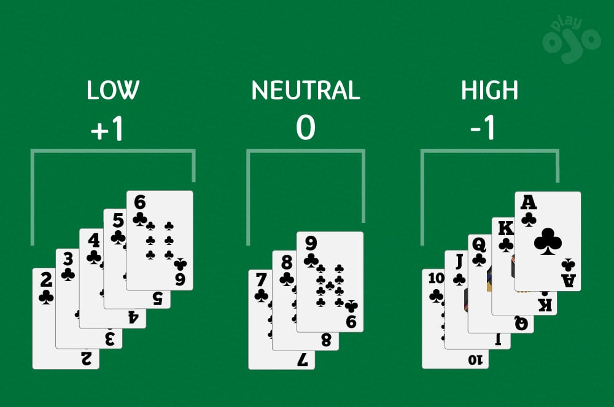
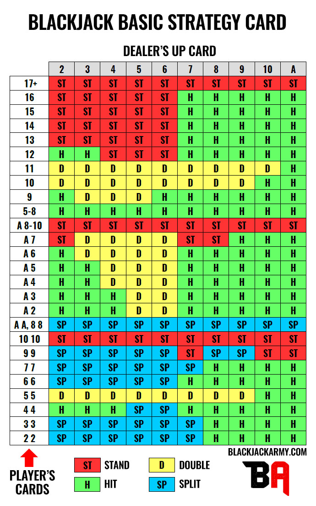

Blackjack Avanzado contra 6-8 Mazos
En esta página, vamos a explorar estrategias avanzadas para jugar al blackjack cuando te enfrentas a 6-8 mazos de cartas. Aquí hay algunas técnicas clave:
- Conteo de cartas: Aprender a contar cartas puede darte una ventaja significativa, especialmente en juegos con múltiples mazos.
- Estrategia de apuesta: Ajustar tu estrategia de apuestas según la cuenta de cartas puede ayudarte a maximizar tus ganancias y minimizar tus pérdidas.
- Conocimiento profundo de las reglas: Comprender las reglas específicas del juego y cómo afectan a las probabilidades puede marcar la diferencia en tu éxito.

Imagen 4
Representacion de el valor de las cartas en el sistema Hi-Lo.

Imagen 5
Hi-Lo, una manera de como las personas cuentan cartas en el casino.

Imagen 6
Tabla de estrategia basica contra 6-8 mazos donde el dealer pide en soft 17.